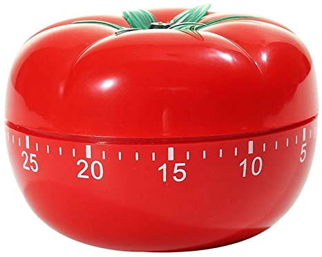

Attendance
- Os
- Reina
- Percy
- Candwin
- Hiro
Agenda
- Project goals
- Individual roles
- Scheduling
Unfinished Business
No unfinished business, as this is the first meeting.
New Business
Decide how to split the project into more managable scetions. Assign a team lead for each section.
Miscellaneous
Hiro will be in charge of future meeting scheduling.
 Pomodoro Example Website